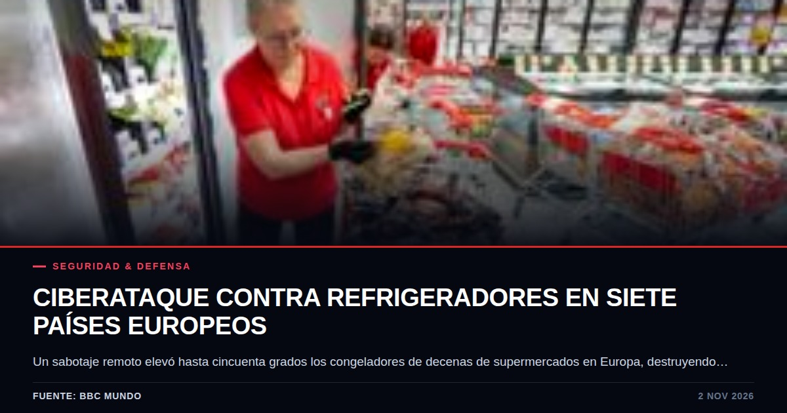

El BCE congela los tipos de interés mientras el Euribor y la energía acorralan a los hipotecados
El Banco Central Europeo mantuvo sin cambios los tipos en octubre, pero los mercados ya anticipan un nuevo endurecimiento monetario en diciembre impulsado por la escalada energética y el riesgo de la deuda soberana.

Datos clave
- El tipo de depósito se mantuvo en el 2,50 %, el de refinanciación principal en el 2,65 % y el de crédito marginal en el 2,90 %.
- La inflación interanual en la zona euro aumentó del 3,2 % en agosto al 3,8 % en septiembre.
- El repunte en el sector energético alcanzó el 18,9 % en septiembre, frente al 14,3 % del mes anterior.
- Los mercados financieros y los inversores esperan una subida de 0,25 puntos porcentuales en la reunión del BCE del 17 de diciembre.
Qué pasó
El Banco Central Europeo decidió mantener sin cambios los tipos de interés tras su reunión celebrada en Fráncfort el jueves 29 de octubre. La institución presidida por Christine Lagarde conservó los niveles fijados en septiembre, situando el tipo de depósito en el 2,50 %, el tipo de refinanciación principal en el 2,65 % y el tipo de crédito marginal en el 2,90 %.
A pesar de esta pausa oficial, los titulares de hipotecas en países como Portugal ya sufren cuotas mensuales más elevadas. Los mercados financieros y los tipos del Euribor se han adelantado a las decisiones formales, reflejando expectativas claras de un endurecimiento inminente de la política monetaria antes de que concluya el año.
El contexto
La decisión de los responsables políticos responde a un escenario macroeconómico complejo y marcado por la volatilidad externa. Según las cifras oficiales del propio BCE, la inflación interanual en la zona euro escaló del 3,2 % en agosto al 3,8 % en septiembre. Detrás de este repunte se encuentra el encarecimiento de los costes energéticos, exacerbado por el conflicto en Oriente Medio que ha disparado los precios del petróleo y el gas.
El sector energético registró un incremento interanual del 18,9 % en septiembre, superando con creces el 14,3 % registrado el mes anterior. Durante la reunión de dos días, Christine Lagarde reconoció que se sopesó la opción de subir los tipos de forma inmediata, aunque finalmente se optó por esperar a disponer de nuevos datos económicos para evaluar la evolución real de la crisis.
El punto ciego
El análisis de Punto Ciego revela que el verdadero foco de inestabilidad no reside únicamente en la evolución de los precios al consumo, sino en la vulnerabilidad de las finanzas públicas de los Estados miembros. Los costes de financiación soberana están aumentando de manera sostenida en toda Europa, y Francia acapara la atención de los mercados debido a sus desequilibrios presupuestarios y la incertidumbre política.
Mientras el debate público se concentra en si el BCE subirá o no los tipos en diciembre para situar el tipo de depósito en el 2,75 %, los gobiernos con elevada deuda pública se enfrentan a un escenario de financiación sumamente costoso. Esta pinza limita el margen de maniobra fiscal de las administraciones y traslada la carga financiera directamente a los ciudadanos y a un tejido empresarial europeo ya debilitado.
Quién gana y quién pierde
En este tablero monetario, los acreedores y las entidades financieras consolidan márgenes en un entorno de tipos elevados, mientras que los principales perdedores son los hogares con endeudamiento variable y las administraciones públicas con perfiles de deuda frágiles. Las empresas que dependen del crédito para financiar su inversión también asumen un freno directo en su actividad.
El BCE camina sobre una cuerda floja: si prioriza la contención de la inflación mediante subidas de tipos, agrava el riesgo de frenar en seco la frágil recuperación económica del bloque comunitario y tensiona las cuentas de los Estados más endeudados.
Qué vigilar
El indicador clave para las próximas semanas será la evolución de los precios energéticos internacionales y su traslado definitivo a los índices de precios de octubre y noviembre. Cualquier escalada adicional en Oriente Medio dinamitará las previsiones de Fráncfort.
Asimismo, resulta indispensable seguir de cerca la cotización diaria del Euribor y la reunión programada para el 17 de diciembre, donde se dilucidará si el banco central ejecuta la esperada subida de 0,25 puntos porcentuales y cómo reaccionan los mercados de deuda ante la situación política en Francia.
Fuentes consultadas
- The Portugal News: El Banco Central Europeo mantiene los tipos de interés sin cambios
- Bankinter: Análisis de la última reunión del BCE
- وكالة سبأ: El Banco Central Europeo mantiene los tipos de interés sin cambios y advierte sobre el aumento de los riesgos inflacionarios
- www.tmgm.com: BCE: Lagarde dimitirá mientras la Fed mantiene tipos | 29 oct 2026
- Aragón Play: El BCE mantiene los tipos de interés, pero podrían subir en diciembre
Te puede interesar

Los futuros de Wall Street repuntan tras un octubre bajista entre la pausa de la inteligencia artificial y la caída del petróleo
El mercado accionario estadounidense registra un respiro tras el cierre negativo de octubre, impulsado por una contracción en los precios del crudo y la expectativa ante las elecciones de mitad de mandato.

El anémico repunte económico de Chile expone fracturas en la producción industrial
El avance del 0,2% en septiembre interrumpió dos meses de contracción económica en Chile. Sin embargo, el desplome industrial y el freno minero cuestionan la solidez del resultado.

Sabotaje a la cadena de frío: cuando los refrigeradores de supermercados en Europa se convierten en blancos vulnerables
Un ciberataque simultáneo en siete países europeos elevó la temperatura de los congeladores comerciales hasta destruir millones de euros en alimentos, dejando al descubierto los peligros de la automatización remota.